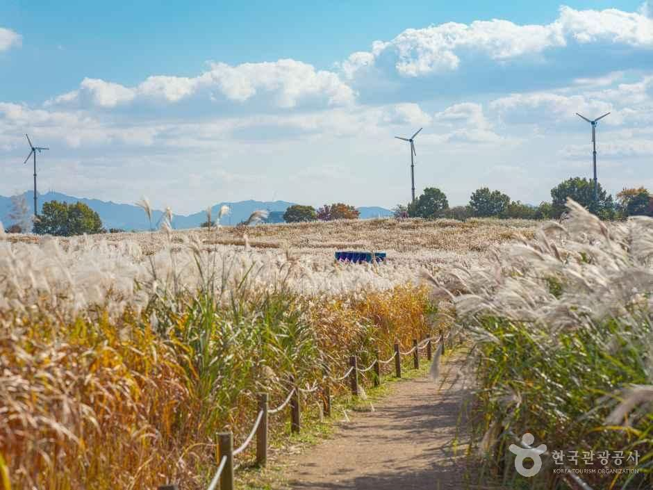
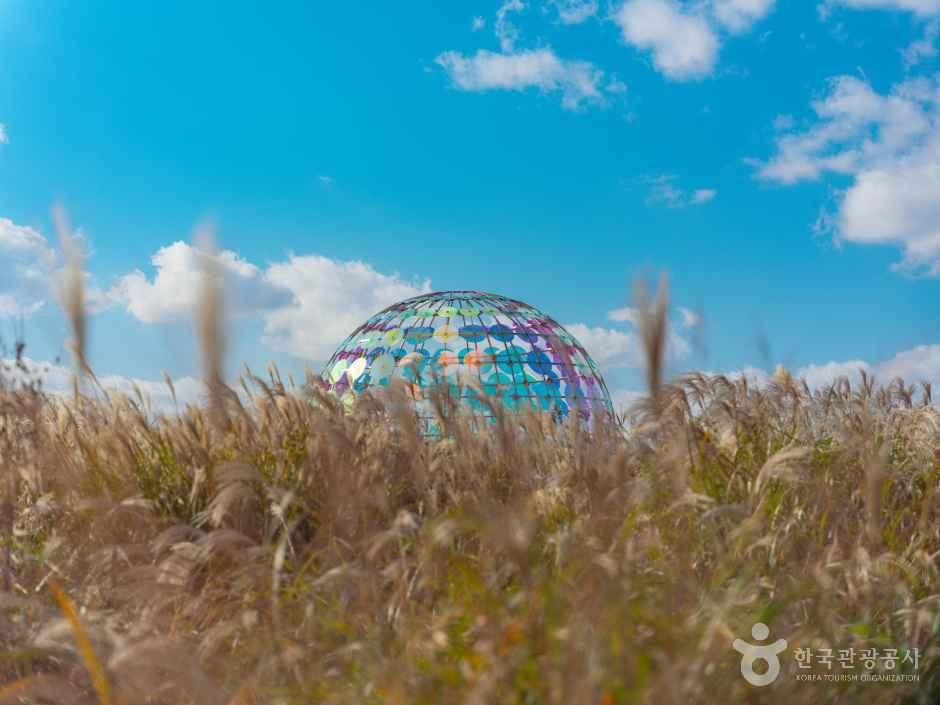
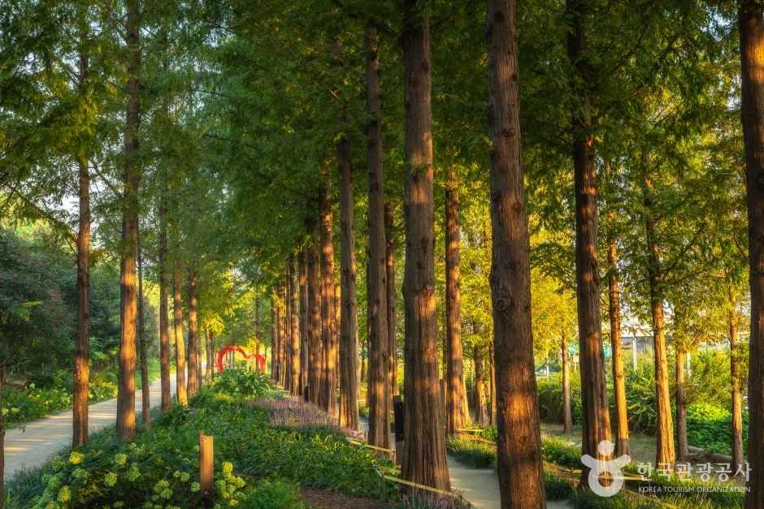
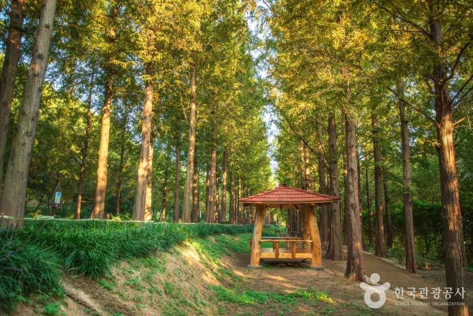
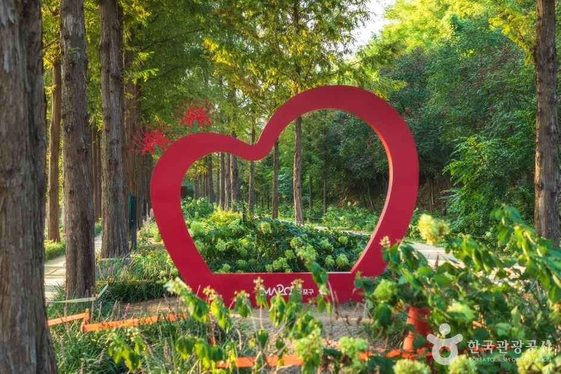

Seoul World Cup Park Guide: Overview
This Seoul World Cup Park guide covers one of the city's most surprising green spaces: a set of five parks in Mapo-gu built on Nanjido, Seoul's former landfill. Between 1978 and 1993 the city's rubbish formed two huge mounds here. For the 2002 FIFA World Cup they were stabilised and turned into an ecological park of about 2.7 million square metres.
Today you can walk from Pyeonghwa (Peace) Park beside the stadium to the silver-grass hilltop of Haneul Park and the metasequoia lanes below it, all for free. In late October the same lawns host the Seoul Petlympic, a festival of dog sports, making this a good pick for travellers with or without pets.

From Landfill to Five Parks
According to Korea Tourism Organization (KTO) data, World Cup Park is made up of Pyeonghwa Park, Haneul Park, Noeul Park, Nanjicheon Park and Nanji Hangang Park. Around 733,000 trees of 92 species have been planted, and Nanji Pond and Nanjicheon stream attract birds and other wildlife.
Pyeonghwa Park, laid out on about 135,000 pyeong (roughly 446,000 m²) in front of the stadium, is the gateway and the park's symbol of peace. The World Cup Park exhibition hall explains how Nanjido changed from an island of flowers to a rubbish dump and back to nature.
Haneul Park: Silver Grass Above the Han River
Haneul Park ("Sky Park") sits on top of one of the old landfill mounds, about 100 m above the river. Its flat summit is covered with roughly 94,000 m² of eulalia, with paths cutting through grass taller than an adult, wind turbines that help power the park, and lookout points over the Han River and Bukhansan.
There are three ways up: the 291 steps of the Haneul Stairs (about 20 minutes), a zigzag paved path, or the Maengkkongi electric shuttle from the Nanjicheon Park car park. A newer south-side Z-shaped staircase links the summit with the Han River side and the metasequoia lanes.

Metasequoia Lanes and Forest Walks
Below Haneul and Noeul parks, rows of tall metasequoia trees line the walking roads, turning rust-orange in November. Recent park updates describe a 1.0 km Noeul Park section, opened in May 2026, that joins the Haneul Park lane to form a 2.3 km "World Cup Park Metasequoia Road". Benches, a wooden pavilion and photo frames are set along the way.


Seoul Petlympic 2026 at Pyeonghwa Park (October 24–25)
The 2026 Seoul Petlympic was a free-entry dog-sports festival organised by the Seoul Metropolitan Government and run by the Korea Agility Union on Pyeonghwa Park's Peace Plaza, 10:00–17:00 on October 24–25, 2026.
- Petlympic events: Stay Classic, Recall Sprint, Slalom through cones and a 15 m Team Sprint, open to first-timer dogs and owners (40,000 KRW for two events, pre-registration).
- Dog Trail: a guided walk of about 4 km through Pyeonghwa Park with your dog (40,000 KRW, pre-registration).
- Competitions and shows: agility, frisbee, dog dance and flyball demonstrations.
- On site: pet-etiquette activities, dog rest lounges, toilet and water zones, and brand booths.

Visitor Information
| Item | Details |
|---|---|
| Place | World Cup Park (월드컵공원), 243-60 World Cup-ro, Mapo-gu, Seoul; Haneul Park visitor centre: 95 Haneulgongwon-ro |
| Hours | Open daily all year; Haneul and Noeul parks close at night, with hours changing monthly (KTO lists 05:00–20:30 for Haneul Park) |
| Admission | Free |
| Maengkkongi shuttle | Nanjicheon Park ↔ Haneul Park summit; adults 2,000 KRW one way / 3,000 KRW return; children, seniors 65+ and disabled visitors 1,500 / 2,200 KRW (2026) |
| Information | World Cup Park +82-2-300-5500; Haneul Park +82-2-300-5501 |
| Parking | Available (Pyeonghwa Park and Nanjicheon Park car parks; fees apply) |
| Subway | Line 6 World Cup Stadium Station (Exit 1 for Haneul Park, about 1.9 km) or Mapo-gu Office Station |
| Seasonal events | Seoul Eulalia Festival (October; 2026: Oct 17–23) and Seoul Petlympic (2026: Oct 24–25) |
Sources: Korea Tourism Organization data for World Cup Park, Haneul Park and the 2026 Seoul Petlympic, the Seoul official tourism site (VisitSeoul) and Seoul Parks. Photos © Korea Tourism Organization (KOGL Type 1, attribution). No AI-generated images. Hours, fares and event dates change — confirm before you go.
Getting There
Take Seoul Subway Line 6 to World Cup Stadium Station. Pyeonghwa Park is beside the station. For Haneul Park, leave by Exit 1, walk about 800 m to the Maengkkongi shuttle ticket booth near the Nanjicheon Park car park, then either ride up or climb the Haneul Stairs. From Hongdae the subway or a taxi takes about 15 minutes; from Gimpo Airport about 25 minutes.
Tips for Visiting
- Time it for sunset: the hilltop is famous for sunsets over the Han River, but go up about an hour before closing so you are not rushed.
- Check the last shuttle: the uphill shuttle stops about 30 minutes before the service ends, which is earlier than park closing.
- Dress for wind: Haneul Park is exposed; bring a windproof layer from October onwards.
- Stay on the paths: in winter the grassland is a shelter for migratory birds.
- Make a day of it: combine with a match or tour at Seoul World Cup Stadium, or Mangwon Market and Hongdae nearby.
How It Compares with Other Seoul Parks
| World Cup Park | Seoul Forest | Olympic Park | |
|---|---|---|---|
| Area | Mapo-gu, west Seoul | Seongdong-gu, east Seoul | Songpa-gu, south-east Seoul |
| Highlight | Silver grass hill, metasequoia lanes | Deer enclosure, riverside forest | Baekje earthworks, lawns |
| Cost | Free (shuttle extra) | Free | Free |
| Best for | Autumn views, sunsets, dog walks | Easy family strolls | Festivals, concerts |
Who It Suits
- Great for: Photographers and walkers in autumn, when the eulalia and metasequoias peak.
- Great for: Dog owners — wide paths and pet events like the Petlympic.
- Great for: Visitors staying in Hongdae, Mapo or near Gimpo Airport.
- Less ideal: Travellers short on time who want palaces and markets; allow at least half a day.
Plan Your Seoul Trip
Seoul World Cup Park FAQ
Where is Seoul World Cup Park and how do I get there?
World Cup Park is in Mapo-gu, western Seoul, next to Seoul World Cup Stadium (main address 243-60 World Cup-ro). Take Subway Line 6 to World Cup Stadium Station; Pyeonghwa (Peace) Park is right outside, and Haneul Park is about 1.9 km on foot from Exit 1. Mapo-gu Office Station on Line 6 is another option.
Is World Cup Park free?
Yes. Entry to all the parks is free and they are open every day of the year. Only extras cost money: the Maengkkongi electric shuttle up to Haneul Park (2,000 KRW one way / 3,000 KRW return for adults in 2026) and car parking.
What are the opening hours of Haneul Park?
Haneul Park closes at night to protect wildlife, and its hours change month by month with sunset. Korea Tourism Organization lists 05:00–20:30 as a general range, and Seoul's tourism site notes November hours of about 10:00–20:00. Check the Seoul Parks website before an evening visit.
When is the silver grass at its best?
The eulalia (silver grass) on Haneul Park turns silver from late September to early November. The Seoul Eulalia Festival is held there every October; in 2026 it ran from October 17 to 23. The grass stays standing through winter, so the hilltop is still worth the climb in November.
Can I bring my dog to World Cup Park?
Yes, leashed dogs are welcome on the paths, and the park hosts dog events such as the Seoul Petlympic dog-sports festival, held on Pyeonghwa Park's Peace Plaza on October 24–25, 2026. Keep your dog on a lead, carry waste bags and stay on marked trails, especially in the grasslands.